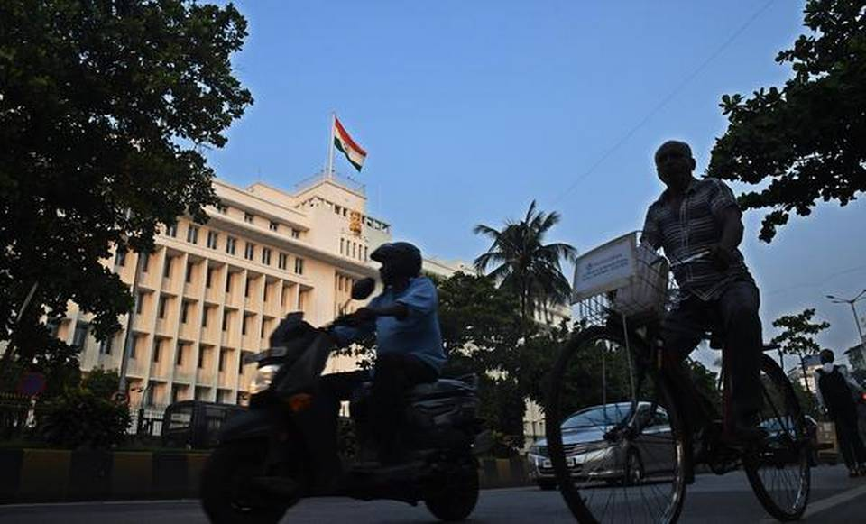

Cabinet meets
Soon after the Governor’s report was sent, the Union Cabinet, led by Prime Minister Narendra Modi, met and approved a recommendation to the President to issue a proclamation under Article 356(1) of the Constitution, a senior Home Ministry official said.
The Cabinet assembled at the Prime Minister’s residence minutes before he was to fly to Brazil to attend the BRICS summit.
In his report to the President, Mr. Koshyari said a situation had arisen in which it was impossible to constitute or form a stable government in the State, and the government could not be carried on in accordance with the provisions of the Constitution.
There was no mention of horse-trading or unfair practices in the report.
ALSO READ
Shiv Sena chief Uddhav Thackeray addresses the media in Mumbai on November 8, 2019.
Shiv Sena’s petition in SC calls Governor’s actions arbitrary and malafide
“The Governor of Maharashtra made a recommendation to the President that he made attempts to explore the possibility of formation of government by having appropriate communications with all the political parties who could have formed the government in alliance with other political parties. Unfortunately his attempts to do so have failed so far. Keeping in view the situation, circumstances and ground realities, the Governor is satisfied that the situation has arisen in the State of Maharashtra in which it is impossible to constitute and/or form a stable government in the State,” the official said quoting Mr Koshyari’s report.
The Assembly election results were announced on October 25. After the BJP-Shiv Sena declined to form a government in alliance and the Shiv Sena could not get letters of support from the NCP and the Congress, Mr. Koshyari asked the National Congress Party (NCP) to stake claim to form government in by 8.30 p.m. on Tuesday. However, hours before the deadline was to end, Mr. Koshyari sent in the report recommending Central rule. An official said the report was sent as the NCP sought time till 11.30 a.m. on Wednesday.
The official added that the Governor was satisfied that the “Government of the State of Maharashtra cannot be carried on in accordance with the provisions of the Constitution” and “left with no other alternatives, he is constrained to send his report under the provisions of Article 356 of the constitution.”
Article 356 pertains to provisions in case of failure of constitutional machinery in State under which the President may by a proclamation “assume to himself all or any of the functions of the Government of the State and all or any of the powers vested in or exercisable by the Governor or any body or authority in the State other than the legislature of the State.” The proclamation is issued for a maximum period of six months and can be revoked anytime,” said the official.
Mr. Kovind was attending a function in Sultanpur Lodhi in Punjab when the Governor sent in his report. He signed the proclamation upon his return from Punjab on later in the afternoon.
ALSO READ
Shiv Sena president Uddhav Thackeray arriving at his residence after meeting Sanjay Raut in hospital.
Maharashtra | BJP decides to keep doors open for Sena
“The Governor has, therefore, recommended that the present Assembly be kept in suspended animation for the present and the President of India is requested to take such action/decision as appropriate,” the MHA official said.
The Union Cabinet considered the report of the Governor and has approved making a recommendation to President to issue a Proclamation under article 356(1) of the Constitution imposing President’s rule in relation to the State of Maharashtra and keeping the State Legislative Assembly under suspended animation,” the official said.
Goto top Government Web-Site Link
Latest Information Government Exam Information
About US Contact Us
Mail UsFollow On